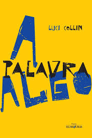
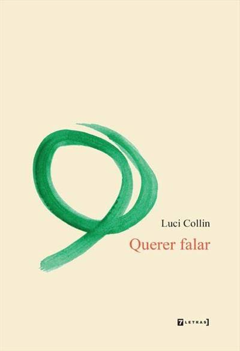
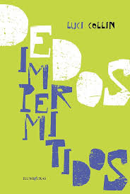

Luci Collin
Biografia
Luci Collin, nascida em Curitiba (PR) em 1964, é professora, escritora, tradutora, poeta e membro da Academia Paranaense de Letras. É uma das principais escritoras da literatura contemporânea paranaense. Formou-se em Piano pela Escola de Música e Belas Artes do Paraná em 1985, em Letras Português/Inglês pela Universidade Federal do Paraná em 1990 e em Percussão Clássica pela EMBAP em 1990. Lecionou Literaturas de Língua Inglesa e Tradução Literária na UFPR e atua também na pós-graduação da PUC-PR. Ocupa a cadeira n.º 32 da Academia Paranaense de Letras.
Publicou seu primeiro livro de poesia em 1984. Sua produção inclui poesia, contos e romances, destacando-se pela experimentação da linguagem, pela musicalidade e pela intertextualidade. Entre seus títulos estão A Palavra Algo (2016), Rosa que Está (2019), Olho Reavido (2022), Com que se Pode Jogar (2011) e Dedos Impermitidos (2021).
Principais Obras

A Palavra Algo (2016)
Querer Falar (2014)
Dedos Impermitidos (2021)Literatura
A escrita de Luci Collin é marcada pela experimentação formal, pela musicalidade e pela transição entre poesia, conto e romance. Sua formação em Música e Letras se reflete no ritmo dos textos, no trabalho com a linguagem e na exploração de temas contemporâneos.
Premiações
- 2008 – Menção honrosa na categoria Romance do Concurso Nacional de Literatura Prêmio Cidade de Belo Horizonte.
- 2010 – Diploma de Membro Vitalício da Academia Feminina de Letras do Paraná.
- 2017 – Segundo lugar na categoria Poesia do Prêmio Jabuti, por A Palavra Algo .
- 2017 – Ingresso na Academia Paranaense de Letras, cadeira n.º 32.
- 2019 – Voto de Congratulações e Aplausos da Câmara Municipal de Curitiba.
- 2022 – Terceiro lugar no Prêmio Clarice Lispector, categoria Conto, da Fundação Biblioteca Nacional.
Complemento
Para conhecer mais sobre a autora e suas obras, consulte fontes bibliográficas confiáveis.
Luci Collin - Site Oficial